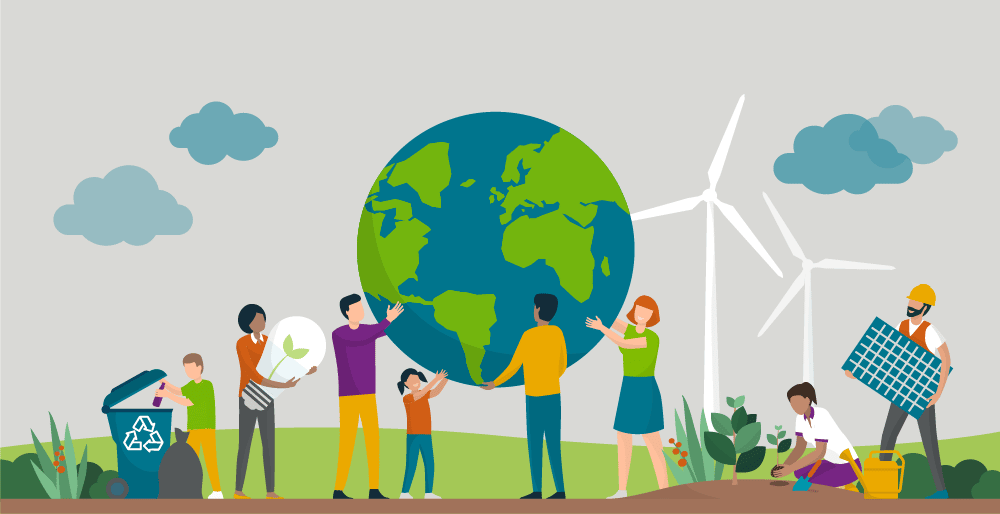

Determine the goal and message of the site. Highlighting the key environmental issues that the projects aim to address. It features attractive images to preserve the environment.
Goals and objectives of environmental development projects, to obtain a better environment.
On the projects page, we display the various environmental development projects in which the organization participates.
Includes a detailed description of each project, highlighting objectives, methodologies and results.
Encouraging visitors to participate in environmental projects or initiatives.

Providing volunteer and contribution options.
Additionally, there is a call-to-action button or form for users to register for projects or events. The website contains updates on environmental issues, projects and events.
Includes a contact form for users to submit comments.